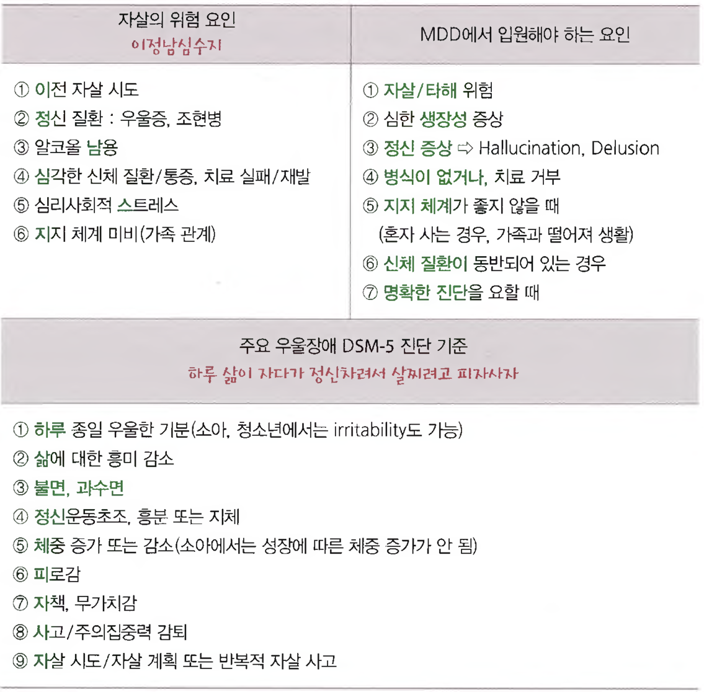

41. 자살
중요성: 자살은 우리나라 4대 사망원인 중 하나이다. 환자는 물론 보호자나 목격자로부터 병력청취가 필요하며, 자살을 유발하는 다양한 원인들을 감별하여 그에 상응하는 위기 개입과 치료를 선택하는 것이 중요하다.
원인 | ||||
정신질환 | 우울장애, 알코올사용장애 등 | |||
심리적 원인 | 충동성, 절망감 등 | |||
사회적 원인 | 가족의 붕괴, 실직 등 | |||
신체질환 | 만성통증 등 | |||
평가목표 1) 자살경향성과 재시도 가능성을 평가 2) 자살의 위험인자와 보호인자를 파악하고 자살계획이나 진단 및 치료 계획을 수립 | ||||
구체적인 성과 | ||||
병력 청취 | 현재와 과거의 자살시도 (의도, 계획, 유발원인 등) | 주요우울장애 (4) 경계성 성격장애 (6) | ||
| 요인 | 높은 위험도 | 낮은 위험도 | |
| 인구학적 자료 | |||
| 연령 | 45세 이후 | 44세 이하 | |
| 성 | 남자 | 여자 | |
| 결혼 상태 | 이혼, 배우자 사별 | 기혼 | |
| 직업 | 무직 | 고용 | |
| 대인관계 | 대립적, 갈등이 큼 | 안정 | |
| 가족배경 | 혼란스럽거나 대립적 가정이 불화하거나 파탄함 | 안정 | |
| 개인적 요인 | 성취도나 통찰력이 낮음 정서가 불안정하고 통제력이 부족함 | 성취도와 통찰력이 높음 정서가 안정되고 통제력이 적절함 | |
| 사회적 요인 | 인간관계가 불안정하고 사회적으로 고립됨 가족이 무관심하게 대함 | 인간관계가 원만하고 사회적 통합을 이룸 가족이 관심을 기울임 | |
| 신체적 상태 | 만성질환, 건강염려증이 있음 물질 사용이 과다함 | 건강함, 지각이 건전함 물질 사용이 적음 | |
| 정신적 상태 | 우울증이 심함 / 정신증 / 성격장애가 심함 물질, 알코올을 남용함 / 희망이 없음 | 우울증이 가벼움 / 신경증 / 성격이 정상적임 음주가 친교 모임에 그침 / 낙관주의적임 | |
| 자살 사고 | 사고가 잦고, 지속적이며 정도가 심함 | 사고가 드물고, 일시적이며 가벼움 | |
| 자살 기도 | 사고가 반복적이고 계획적임 구출도는 낮음 죽으려는 의지가 있음 의사소통이 소극적임(자기를 비하함) 방법이 치명적이고 쉽게 접근 가능함 | 첫 시도이며 충동적임 구출도가 높음 변화하고자 소망함 의사소통이 외향적임(분노를 터뜨림) 방법의 치명성이 낮거나 쉽게 접근 가능 | |
신체 진찰 | 1) 정신상태를 평가할 수 있다. 2) 자살시도를 유발한 신체질환이 있는 경우 이를 평가할 수 있다. 3) 자살시도로 인한 신체 상태를 평가할 수 있다. ※ 한 끝: 대개 할 필요 없는 것으로 주어짐. 하면 손, 발, 허벅지, 다리 등 주로 베이는 부위 사진 | |||
진단 | 자살위험성 재시도 가능성을 평가하기 위한 진단계획을 수립할 수 있다. 자살시도로 인한 신체 상태를 평가하기 위한 진단계획을 수립할 수 있다. | |||
치료 | 응급상황에 대해 적절히 위기개입을 할 수 있다. 전문가에게 자문하고 유사기관과 연계할 수 있다. | |||
환자 교육 | 자살 재시도에 대한 주의사항을 가족이나 지지체계에게 교육할 수 있다. 자살을 유발할 수 있는 위기상황에 대한 대처방법을 환자와 보호자에게 교육할 수 있다. | |||
윤리 법 | 위기상황인 경우에는 사법기관, 정신건강증진센터 및 자살예방센터의 도움을 요청할 수 있다. | |||
PPI | 환자의 무망감, 수치심, 분노 등을 충분히 공감하며, 적절히 대처할 수 있다. 환자와 치료적 동맹을 맺을 수 있다. | |||
[서론]
1) 엄숙하고 진지한 분위기에서 상담 진행
2) 비판적인 말 X, 환자가 자살을 시도할 정도로 힘들었을 상황에 공감 & 정서적 지지 표현
3) 원칙적으로 자살 시도로 내원한 환자는 입원치료가 필요함.
4) 두 번 이상 입원을 권유했음에도 입원 치료를 거절하는 환자
🡪 보호자의 24시간 감시 및 보호가 없는 상태에서 낮 병동 입원 치료와 같은 대체 방안을 제시
5) 대부분의 자살 케이스는 신체진찰을 시행하지 않지만 그럼에도 시간이 부족한 경우가 많음 🡪 시간조절
6) 환자의 말 끊지 말고 SP 속도에 맞춰서 천천히, 차분히 진행
7) 반드시 공감과 비밀 보장으로 상담을 시작하도록 유의!!
[유의점]
1. 자살에 대해서는 직접적으로 질문
2. 고통에 대한 공감은 적절히 표현
🡪 사람들은 누구나 때때로 죽고싶어한다, 그런 상황이라면 저라도 자살하겠다 안됨!
3. 자살 생각이 있는 환자는 자기 비난에 매우 민감하므로 태도에 주의함
4. 질문은 하나씩 하고, 환자의 말과 생각에 속도를 맞춘다.
5. 희망적이진 현실적으로 가능한 메시지 전달 🡪 치료를 잘 받으면 우울증에서 회복될 수 있습니다.
6. 비현실적이고 무조건적 희망은 도움이 되지 않음. 🡪 다 잘 될 겁니다. 걱정하지 마세요(X)
7. 급작스러운 스트레스로 인해 자살 위험을 보이는 경우는 환자를 보호 및 지지해야 함

[대본]
*** (임술수3 시험 때 자살 CC인 환자가 내원했는데, door sign에서 “죽고싶은 생각이 들어 내원함” 환자였는데, “죽고싶다는 생각을 하셨다고 들었습니다.”라고 했는데, SP가 “그걸 어디서 들었어요…?” 이렇게 말해서 굉장히 당황했음. 자살시도를 하여 내원한 게 아닌 이상 먼저 얘기 안꺼내는게 좋을 것 같기도…)
인트로 | 지금부터 10분정도 겪은 일에 대해 면담하고자 합니다. 제가 알기로는 자살시도를 하여 내원하신 걸로 알고 있습니다. 괜찮으시다면 그 부분에 대해서 먼저 얘기해 | ||
| 비밀보장 | 이 상담 내용의 모든 것은 비밀이 보장되니 걱정하지 않으셔도 됩니다. 조금 힘들더라도 대답해 | |
| 안심 | 저는 진심으로 OOO씨가 걱정되기에 전문가적인 입장에서 의학적으로 최대한 도움을 드리고 싶습니다. 면담 중 힘드시면 언제든 부담없이 말씀해주세요. | |
이번시도 | (자살 시도를 해서 온 경우 이번 자살 시도에 대해 자세히 묻기) 언제 이런 일이 발생했나요? 🡪 어떻게 자살을 시도하셨나요? 🡪 특별한 계기가 있었나요? | ||
자살사고 및 행동평가 | O | 언제부터 자살에 대한 생각을 하셨나요? | |
| L | 자살 생각을 하게 된 계기나 사건이 있을까요? → 의 문제로 너무 괴로우셔서 자살을 생각하셨군요. | |
| D | 자살에 대한 생각을 평소에 계속 하셨나요? 몇 차례 하셨나요? 얼마나 자주? | |
| C | 자살을 하기 위한 계획이 있으셨나요? 언제/어디서/어떻게? 왜? | |
| Ex | 이전에도 자살 시도를 하신 적이 있나요? 🡪 그때는 어떤 식으로 시도하셨나요? | |
위험요인 평가 F | 가족 관계 결혼 가족 자살력
직업 거주
폭력 성격 질환 폭력노출 평소 성격 / 이전 이후 성격 변화 / 감정조절 신체적 상태 | ||
공감 | 많이 힘드셨겠군요. 자살이라는 어려운 선택을 하실 정도로 많이 힘드셨을 것 같습니다. 정말 잘 오셨습니다. 이렇게 오셨으니 도움이 될 수 있는 건 다 도와드리고자 합니다. 도와드리기에 앞서 OOO씨의 상태를 정확히 판단을 해야 최선의 도움을 드릴 수 있을 듯 합니다. 몇 가지 질문을 더 드려도 될까요? 힘드시다면 말씀하셔도 됩니다. | ||
A | [MDD] 우울, 흥미 / 밥, 잠, 피곤 / 집중력, 기억력 / 죄책감 / 불안, 초조 -> S I G E C A P S [정신증] 환청/환시 “남들에게 들리지 않는 소리가 들린다거나, 남들이 못 보는 것을 보지는 않으신가요?” [조증] 기분이 갑자기 확 좋아져, 모든 것을 할 수 있을 것만 같던 적이 있나요? | ||
외 | 자살 시도로 인해 다치거나 수술/입원하신 적이 있나요? | ||
과 | 이전에 정신과적으로 진단받았거나 치료받은 적이 있으신가요? 따로 앓고 계신 질병이 있으실까요? | ||
약 | 복용 중인 약물이 있나요? | ||
사 | 술, 담배, 직업, 운동, 커피 | ||
가 | 가족 중 정신과적 질환 있으신 분 있나요? 가족 중 자살 시도를 하셨던 분 있나요? | ||
아웃트로 | 감사/위로 | 어려운 상황에서 면담에 응해주셔서 감사합니다. 이러한 상황에 처하게 된 것은 절대 OOO씨의 잘못이 아니니 스스로의 선택에 대해 자책하지 않으셨으면 합니다. | |
| 요약 | ~~하신걸 보아 ~~~ 소견이 있으신 듯 합니다. 또한 자살 위험도가 높은 정신과적 응급이라고 할 수 있습니다. | |
| 치료 | 지금까지 면담을 진행하면서 드린 질문들에 대한 답변들을 정리해보았을 때 ~(주요우울장애/간헐적 폭발 장애/경계성 성격장애/외상 후 스트레스장애/건강염려증)가 가장 의심되는 상황입니다. 이전 자살 시도력/자살의 가족력/지지적이지 못한 가족 관계/정신과 질환력/충동적 행동/만성질환 = 정신과적 응급 이처럼 기분이 우울해지는 것들이 갑상선 기능 저하증과 같은 원인에 의해서도 발생할 수 있기 때문에 정확한 진단을 위해 검사를 진행해 볼 필요가 있을 것 같습니다. → 혈액검사: 상선 기능 떨어져 있는지, 어디 좋지 않은 곳이 있는지 우울증 척도 검사를 통해 현재 기분 상태를 자세히 파악
| |
| 입원권유 | [입원 결정 요소] - 이전 자살 시도력, 자살의 가족력, 지지적이지 못한 가족 관계, 정신과 - 자살기도 계획이 없더라도 정신 질환(우울증, 정신병적 증상 등)이 의심될 경우 검사 및 경과 관찰을 위해 입원이 필요할 수 있음을 설명 이런 경우 혼자 지내신다면 더욱 우울해지고 안 좋은 생각만 들게 되는데, 입원을 하면 저희가 가까이에서 OOO님을 지켜보며 최선의 도움을 드릴 수 있을 것 같습니다. 입원 치료에 대해 어떻게 생각하시나요? 입원치료라는 것에 대해 부담을 가질 수 있습니다만 몇 일 쉬신다 생각하시고 상담치료나 약물 치료를 병행하시면 우울감이나 자살에 대한 생각에 대해서 좋은 결과가 있으리라 봅니다. 마음을 추스리는 시간을 갖는 게 좋을 것 같은데 어떠신가요? | |
| (입원거절) | 입원을 하지 않고 약물만 처방받고자 하신다면 보호자의 통제하에 단기간 처방해드릴 것이며, 보호자분께서는 OOO님과 항상 곁에 계셔 자살시도를 하지 않는지 지켜봐 주시는 것이 필요합니다. 보호자분께서 상황이 어려우시다면 잠시 낮 병동에 입원하시는 것도 권유드립니다. 또한 이후에 반드시 정신과 외래에 방문하시길 바라겠습니다. | |
| 마무리 | 입원을 결심하신 건 본인을 지키려는 아주 용기있고 현명한 선택이에요. 저희가 함께하면서 안전하게 회복할 수 있도록 | |
교육 | 우울증 | 우울증은 약으로 치료가 가능하고, 스트레스 해소에 도움을 줄 것입니다. 항우울제는 효과가 나타나려면 2-3주 소모되기 때문에 꾸준히 계속 복용하기 필요 | |
| 가족 | 가족에게 현재 상황을 이야기해보는 것이 어떠세요? 🡪 가족에게 알리기 싫어하는 경우 비밀 보호를 보장 / 가족 상담 권유
자살 유발 위기사항 대처: 주변 위험 물질 멀어지기, 보호자 교육: | |
| 기타 | 보건복지부 콜센터 129/정신건강증진센터/자살예방센터 집에 가서도 힘들면 편하게 내원하세요. | |